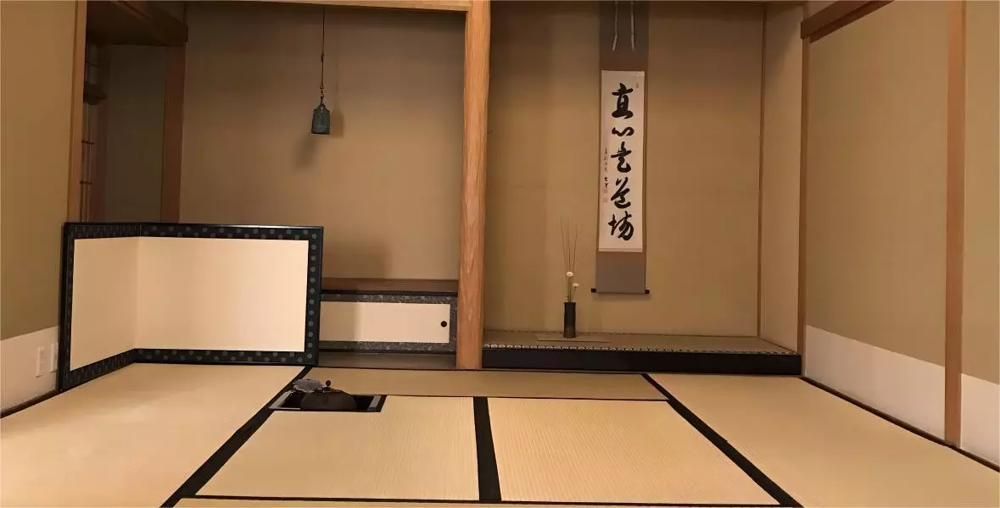

<!-- Main Container -->

<div class="container-fluid-kamn">
    <div id="main">
        <div class="banner" id="banner">
            <div class="banner-top">
                <h1 class="title">
                    <div class="text">守真藏茶 微信小程序</div>
                </h1>
                <div class="banner-img-box">
                    
                </div>
                <div class="banner-down-box">
                </div>
                <div class="down-qrcode">
                    
                    <div class="lable">扫一扫打开小程序</div>
                </div>
                <div class="phone_warp">
                    <div class="phone-box">
                        
                        
                    </div>
                </div>
            </div>
        </div>

    </div>
</div>


<!--End Main Container -->